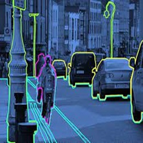

BTech Thesis
Thesis: Unsupervised Object Detection for Automatic Video Annotation
In addressing the challenge of insufficient fully labeled data for custom categories in object detection, I undertook the task of creating an unsupervised automatic video annotation ML pipeline as my Bachelor's Thesis Project. The primary aim was to facilitate the annotation of unencountered objects in videos, leveraging general labels provided.
The pipeline follows a three-step approach for object detection, combining Objectness Detection, Clustering, and Identification. The first step involves training a Mask RCNN-based binary classifier to learn objectness, extracting information that generalizes well to new categories. Subsequently, features are extracted from the Regions of Interest (RoI) proposed by the classifier using the VGG16 network. These features are then subjected to k-mean clustering to group similar objects together.
Addressing the core issue of insufficient labeled data, the pipeline goes beyond the conventional reliance on fully labeled images with bounding box annotations. Instead, it taps into the abundance of weakly labeled images and videos, easily accessible through platforms like Google and YouTube. By automating the bounding box annotation process for videos, the pipeline can seamlessly extend its capabilities to images.
The theoretical foundation of the pipeline rests on the concept of image pyramids and the use of a binary classifier for high-level objectness detection. This approach capitalizes on the similarity in high-level features among different objects, enabling the model to detect objects even with a minimal set of labeled data.
Once an object is detected, the next challenge lies in correctly matching it to the given general label. This is addressed through the clustering of features and the assumption that the desired object is present in the majority of frames in a video. The clustering output, coupled with these assumptions, enables the identification of the object described by the general label.
The overall success of the pipeline is evident in achieving an 80% accuracy for unforeseen objects, a significant improvement from previous limitations. By combining objectness detection, feature extraction, and clustering, the model demonstrates its efficacy in providing bounding box annotations for object classes, even with weak labels for videos. The three sub-parts of the problem—Object extraction, Feature extraction, and Clustering/Object identification—are seamlessly integrated into a coherent and effective solution, addressing the challenges posed by the scarcity of fully labeled data.